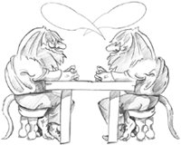

Chapter 2. Creating Dialogs

This chapter will teach you how to create dialog boxes using Qt. Dialog boxes present users with options and choices, and allow them to set the options to their preferred values and to make their choices. They are called dialog boxes, or simply "dialogs", because they provide a means by which users and applications can "talk to" each other.
Most GUI applications consist of a main window with a menu bar and toolbar, along with dozens of dialogs that complement the main window. It is also possible to create dialog applications that respond directly to the user's choices by performing the appropriate actions (for example, a calculator application).
We will create our first dialog purely by writing code to show how it is done. Then we will see how to build dialogs using Qt Designer, Qt's visual design tool. Using Qt Designer is a lot faster than hand-coding and makes it easy to test different designs and to change designs later.
 |